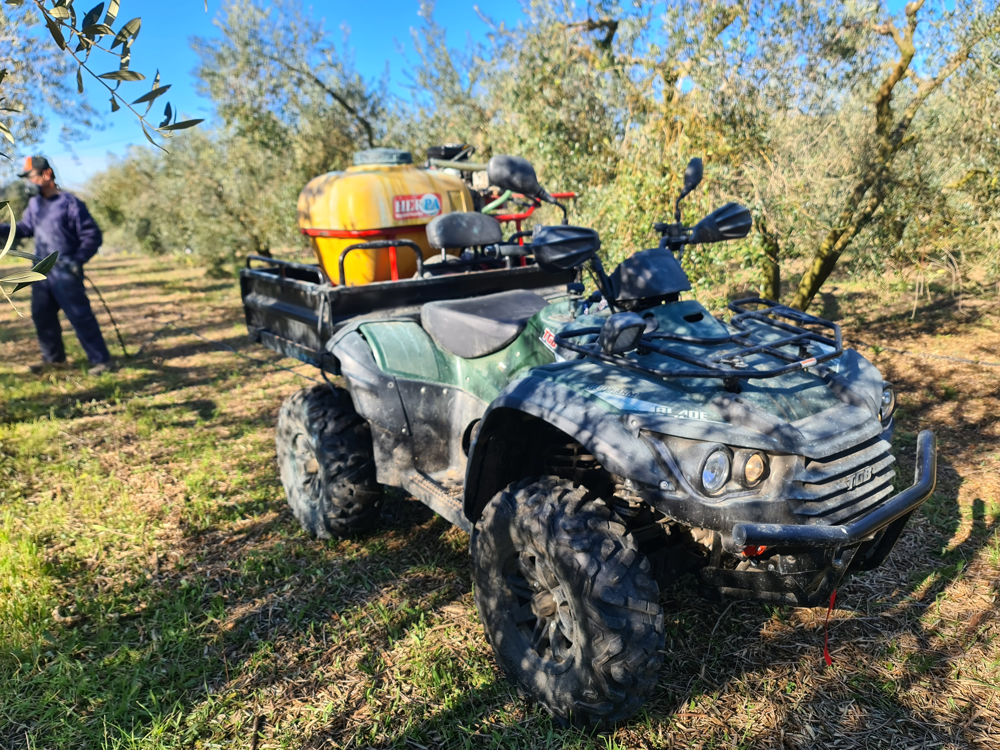

CAMPAÑA DE OLIVA 2025-2026
Selecciona una opción del menú año para empezar a trabajar.
Sobre Nuestra Masía
Bienvenido al panel de gestión de ArzAgraMunt. Nuestra masía se dedica a la producción agrícola sostenible, combinando la tradición del cultivo del olivar con las técnicas modernas de optimización de recursos.
A través de este sistema centralizado, monitorizamos el rendimiento de cada una de nuestras paradas en tiempo real, garantizando una trazabilidad absoluta desde la recolección en el árbol hasta el pesaje final en la almazara. Nuestro compromiso es la máxima calidad con el menor impacto ambiental.
